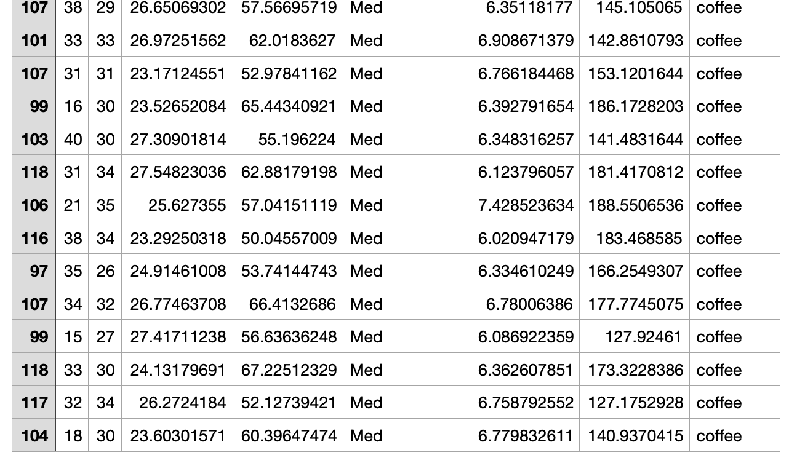
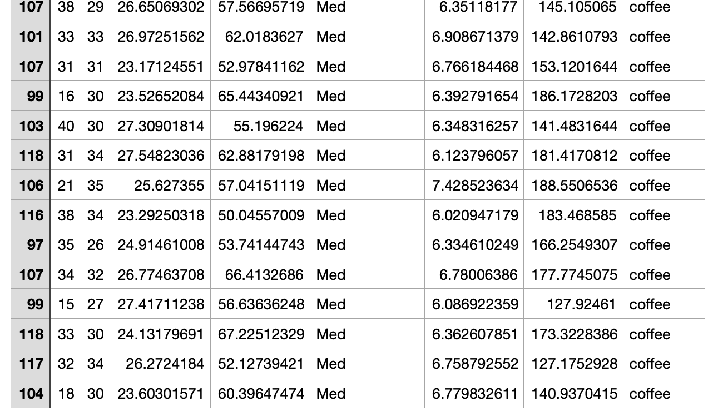
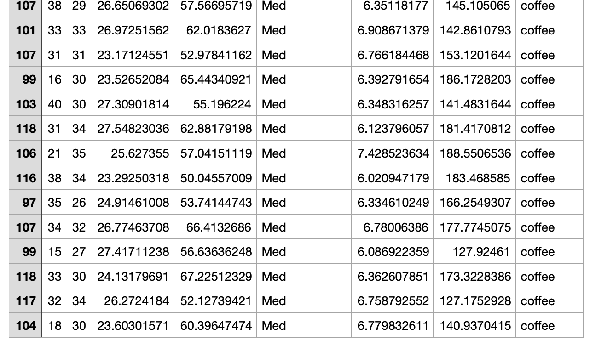

SVM - Record Data (R)
This page shows the process of using R Studio to make SVM models and make predictions.
Below is the code
(download)
:
 

This page shows the process of using R Studio to make SVM models and make predictions.
Below is the code
(download)
:

SVM
“Support Vector Machine” (SVM) is a supervised machine learning algorithm that can be used for both classification or regression challenges. However, it is mostly used in classification problems. In the SVM algorithm, we plot each data item as a point in n-dimensional space (where n is a number of features you have) with the value of each feature being the value of a particular coordinate. Then, we perform classification by finding the hyper-plane that differentiates the two classes very well.(Analytics Vidhya)
Tuning and hyperparameters
C parameter adds a penalty for each misclassified data point. If c is small, the penalty for misclassified points is low so a decision boundary with a large margin is chosen at the expense of a greater number of misclassifications.
Gamma parameter of RBF controls the distance of influence of a single training point. Low values of gamma indicates a large similarity radius which results in more points being grouped together. For high values of gamma, the points need to be very close to each other in order to be considered in the same group (or class). Therefore, models with very large gamma values tend to overfit. (Analytics Vidhya)
Polynomial Kernel
First I used polynomial kernel to build the model of the ph and temperature variables after setting the other variables such as humidity, N, P, K, and rainfall to a fixed number.
The plot below is the same mothod of controlling variables to build polynomial model of ph and humidity.
Confusion Matrix
After useing tuned_cost() function, I learnt cost = 100 produces the highest accuarcy among 0.01, 0.1, 1, 10, 100, and 1000. Therefore, I tuned cost=100 to build the polynomial kernel and predict the labels afterwards. The confusion matrix heatmap shows the model did a really good job predicting the labels.
Linear Kernel
Second I used linear kernel to build the model of the ph and temperature variables after setting the other variables such as humidity, N, P, K, and rainfall to a fixed number.
The plot below is the same mothod of controlling variables to build linear model of ph and humidity.
Confusion Matrix
After useing tuned_cost() function, I learnt cost = 10 produces the highest accuarcy among 0.01, 0.1, 1, 10, 100, and 1000 in this model. Therefore, I tuned cost=10 to build the polynomial kernel and predict the labels afterwards. The confusion matrix heatmap also shows the model did a really good job predicting the labels.
Radial basis function Kernel
Second I used radial basis function kernel to build the model of the ph and temperature variables after setting the other variables such as humidity, N, P, K, and rainfall to a fixed number.
The plot below is the same mothod of controlling variables to build radial basis function model of ph and humidity.
Confusion Matrix
I used cost=0.1 as the hyperparameter of this model. The confusion matrix of RBF model is very poor that I counldn't use it to predict anything.
Discussion
Based on this case and the overall performance of SVM predictions, I think SVM is a raliable model to predict record data labels if picked right kernel and hyperparameters.
The most noticable advantage of SVM is it can be multi-deimentional and when adding dimentions to our dataset, it's easier to find the groups and labels. We can also reduce our dimentionality to just focus on two or three variables by setting other variables fixed, as I did above.
However, I think it's worth thinking what is the wise way to utilize SVM properly and when to use it.